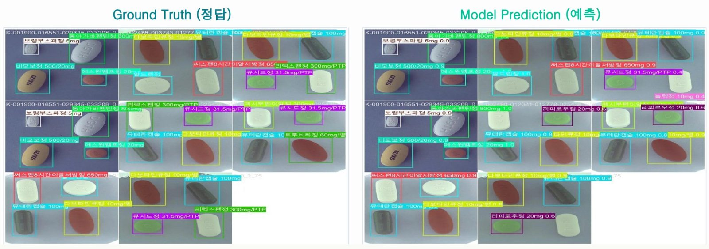

PillScope · 경구약제 이미지 객체 탐지
3~4개가 함께 찍힌 사진에서 각 알약의 위치를 찾고 56종 중 품목을 맞히는 모델입니다. 학습 이미지는 186장, 클래스 불균형은 51배(153장 대 3장)였습니다.
내가 맡은 일
- 역할
- 팀장 · PM · 모델 실험
- 기간
- 2026.04 – 2026.05
- 팀
- 5인 팀 · 코드잇 스프린트 팀 프로젝트
팀 운영
팀장이자 PM으로 7단계 실험 일정과 역할 관리
파이프라인
COCO → YOLO 공용 학습 파이프라인 구축, YOLOv11l 학습과 DETR 계열 실험
데이터
Crop & Paste 증강, 비슷한 사진을 같은 split으로 묶는 누수 방지
직접 작성한 코드
COCO → YOLO 파이프라인, EDA·전처리·증강 노트북 (members/eunnam)
성과
186 → 1,026장
증강으로 늘린 학습 이미지
mAP@0.5 0.886 → 0.964
0.851 → 0.9355
Kaggle 점수
conf 임계값 조정과 3모델 WBF 앙상블
0.936
YOLOv11l 검증 mAP@[0.75:0.95]
RF-DETR 0.882, RT-DETRv2 0.883보다 높음. 모델마다 학습 이미지 수가 달라 통제 비교는 아님
화면

시스템 구조
학습 파이프라인과 서비스를 연결한 구조

버건디 라벨이 제가 맡은 부분입니다. 이미지를 누르면 크게 볼 수 있습니다.
구조 결정
1. 점수가 부풀지 않게 split부터
왜: 촬영 옵션만 다른 비슷한 사진이 학습과 검증에 나뉘어 들어가면 점수가 실제보다 높게 나옵니다.
바꾼 구조: 비슷한 사진을 같은 split으로 묶었습니다.
결과: 검증 점수를 믿고 모델을 비교할 수 있게 됐습니다.
2. 데이터가 적은 알약을 직접 늘린다
왜: 한 번도 찾지 못하는 희귀 알약이 있었습니다.
바꾼 구조: 데이터가 적은 알약을 오려 붙이고, 인터넷 알약 이미지를 대회 배경에 합성했습니다.
결과: 학습 이미지가 1,026장이 됐고 희귀 알약까지 탐지했습니다.
한계
모델마다 학습 이미지 수가 달라(1,116 / 1,206 / 186장) 모델 비교는 통제된 비교가 아닙니다.
YOLOv11RT-DETRv2RF-DETRCOCOWBF